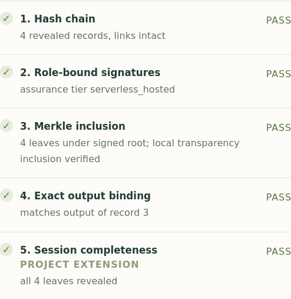
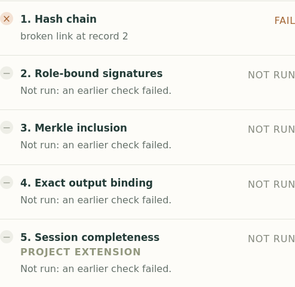

biodesign-vat / Verifiable audit trails
Verifiable records for
biological design
Submit a biological sequence with a signed record of its design objectives, inputs and outputs.
Control disclosure of design records.
Share records with authorized reviewers.
Verify the submitted evidence.
Check record integrity, recorded objectives and missing evidence.
The prototype demonstrates a laptop-local ledger. Independent public operation and biological safety screening are not provided.
Submission and review
Submit the sequence
with its design record
A public entry records a commitment to that bundle.
Proposed deployment: independent operators and controlled review. The prototype runs locally.
Privacy boundary / Different audiences, different disclosures
Separate public metadata
from private design records
Underlying work
Sequences, prompts, methods, structures, results, and private keys.
Evidence for scrutiny
Disclosed records and artifact bytes. The verifier reports missing committed records.
Digests and metadata
Cryptographic digests, identifiers, counts, times, and signed checkpoints.
The validating service receives full records. External model and tool providers receive submitted inputs.
Review experience / Clean example
Five verification checks pass
The submitted sequence matches a recorded output, and all committed records are disclosed.
Actual prototype screenshot →

Synthetic example; actual verifier results. Passing integrity does not certify safety or correct science.
Review experience / Changed evidence
Changing a signed record
causes verification to fail
Record 1, changed after sealing:
therapeutic lead
biochemistry class
Original signatures retained.

Actual prototype screenshot of a synthetic example. The rejection concerns changed evidence, not the wording’s acceptability.
Review experience / Content still needs judgment
Review objectives against
the stated purpose
“therapeutic lead”
serum_antibody_recognition
Both recorded with direction: min.
OK · exit 0 Recorded objectives require scientific and policy review.
Synthetic doctored example. Objective names prompt contextual review; they do not establish malicious intent.
Review experience / Incomplete disclosure
Nine committed records are missing
The bundle discloses record 5 from a session containing ten committed records.
Membership passes.
The proof places record 5 in the committed session.
INCOMPLETE · exit 6
The committed session is not fully disclosed.
The ten leaves count records. Complete disclosure is required in the reviewer’s bundle, not on the public ledger.
Private review / Required records and optional artifacts
Specify what the reviewer receives
Complete records
To pass session completeness, the reviewer needs all committed records.
Available artifacts
Artifact bytes may be withheld while their digests remain in the records.
Record fields cannot be silently redacted after signing. No zero-knowledge review or automatic confidential redaction is implemented.
Public ledger / Disclosed fields
Public entries contain
digests and metadata
Digests + metadata
Receipt and attestation digests; session root, ID and record count; log position and time; signed checkpoint.
The underlying science
No sequence, prompt, objective, transcript, structure, raw result, or private key bytes.
Vision: globally readable, independently operated ledger. Current demonstration: local. Hashes are not encryption or anonymity.
Recorded study / Twelve protein designs
A recorded study of 12 protein designs
Published designs
A fixed panel of 12 BenchBB protein designs.
Model calls
12 structure predictions and 12 sequence evaluations.
Committed records
Including recorded computation relationships.
Recorded study with signed evidence. This study does not demonstrate independent public anchoring.
Deployment requirements
Independent deployment
requires additional controls
Portable, checkable evidence
Research and scientific records, verification, explicit provenance, and local transparency proofs.
Independent shared infrastructure
Public observation, confidential validation and review, external operators, and stronger capture.
Global operation and organizational access controls are not built. Biological safety and off-ledger completeness are not established.
Proposed pilot / Synthesis review
Evaluate VATs in
synthesis review
Agree on required evidence, confidential handling and review procedures with participating synthesis providers.
Proposed next step: a voluntary pilot measuring review outcomes and researcher burden.
Technical details / Recorded information
Record design inputs, decisions and results
Context
User/session
Timestamps
Environment
Computation
Inputs
Parameters/objectives
External data
Evidence
Intermediates
Results
Hash link
Artifact reference: SHA-256 digest and byte length.
Artifact content: the original file or data bytes.
A content fingerprint identifies committed bytes; it does not make those bytes available for inspection.
Technical details / Canonical encoding
Use a standard byte encoding for each record
genesis.sha_prev = "00" * 32
Sealing signs a commitment to the recorded history.
Standardized JSON encoding gives the same record the same fingerprint. Hidden links cannot be inspected.
Technical details / Membership and completeness
Verify record membership and disclosure
parent = SHA256(0x01 || left_hash || right_hash)
Inclusion proof
Combine a leaf with sibling hashes to recover the signed root.
Completeness check
Compare unique revealed positions with the signed tree size.
Membership verification checks the record’s position, proof shape and signed tree size as well as the root hash.
Technical details / Signatures and trust
The verifier selects trusted signing roles
Who signs what?
Designer: session intent
Recorder: head + attestation
Notary: simulated receipt
Log: checkpoint
Who chooses trust?
The verifier selects public keys for each role independently of the submitter’s claimed identity.
Trusted roles are chosen by the verifier. Four keys held by one operator are not four independent authorities.
Technical details / Portable verification
Verify the bundle with verifier-selected trust
vat-bundle/1 ZIP
blobs/<sha256>
Records, signatures, proofs, artifact bytes.
Verifier-owned inputs
Public role trust
Submitted sequence
Required-transparency policy
Optional saved checkpoint
NOT_INCLUDED=4 · SEQUENCE_MISMATCH=5 · INCOMPLETE=6
The recipient chooses trusted signers and review policy; a submission cannot declare itself trustworthy.
Technical details / Computation dependencies
Record which output each computation uses
second = double.with_recorder(recorder).call(first.ref())
# second.value == 12; the producer reference is recorded
.ref() / .artifact_ref()
Bind a consumer input to an explicit producer output.
.value
Passes the value without that lineage relationship.
Illustrative programming example. Checking dependencies is separate from checking a complete audit bundle.
Technical details / Recovery
Recover interrupted work
without submitting it again
Execution recovery
A polling timeout can mean “still unknown.” Reconcile the accepted call.
Publication recovery
Prepared bytes → log append → saved evidence → published files.
Recover the evidence from the original execution; do not rerun the science to repair its history.
Technical details / Session and public log trees
Separate record proofs from publication proofs
Private session tree
Leaves: canonical records
Commitment: recorder-signed head
Question: does this record belong?
Public ledger tree
Leaves: notarized commitments
Commitment: public signed checkpoint
Question: was this submission publicly committed?
Record membership and public publication answer different questions and use separate commitments.
Privacy deep dive / The exact public surface
Public identifiers and times permit correlation
Entry fields
leaf_index · accepted_at
notary_receipt_digest
attestation_digest
session_uuid · session_root
session_tree_size
Checkpoint fields
tree_size · root_hash
timestamp · keyid
simulated
independent_timestamp
signature
The prototype defines these public fields. RAND does not prescribe this schema. Proofs expose hashes and positions.
Privacy deep dive / Recipient-by-recipient disclosure
Data disclosed to each recipient
| Recipient | Data available to that recipient |
|---|---|
| Organization / recorder | Recorded requests, outcomes, artifact bytes, and local signing keys. |
| External tool / model provider | Inputs sent to that service: prompts, queries, sequences or structures as applicable. VAT does not prevent provider observation. |
| Current notary + log admission | Submitted bundle containing the full record chain, signatures, and any supplied artifact bytes. |
| Authorized reviewer | Disclosed records and supplied artifacts, trust and proofs. All committed records are required to pass completeness. |
| Public ledger reader / monitor | Entry and checkpoint fields on the preceding slide, plus proof hashes/positions. No underlying records or artifact bytes. |
Deployment requires separate controls for organizational access, transport confidentiality and provider retention.
Privacy deep dive / Public export versus service access
Validation services receive
the full record chain
Current admission
The notary and log append path receive a bundle and replay the full record chain.
Public export omits that chain.
Confidential review
All records for a complete session check.
Optional artifact bytes; explicit disclosure gaps. Never silently redact signed fields.
Privacy from public readers does not imply privacy from the service validating the full record.
Scientific interpretation / Reference study
The reference scores did not establish binding
Area under ROC curve · p = 0.727
3 released binders; 9 selected non-binders.
Interpret each metric by its purpose
ESMC scores sequence plausibility, not binding affinity.
ESMFold2 includes ESMC; the stages share a model component.
Recorded 12-design reference study: 3 binders and 9 selected non-binders. Descriptive, not confirmatory statistics.
Discussion / Put the evidence to work
Identify what further review requires
All checks pass
Which claims are established?
What still needs scientific or policy review?
One of ten records
The record is authentic.
What evidence is missing from the submission?
A public commitment
What can an outside observer learn?
Who must see the private contents?
Discussion exercise: distinguish evidence integrity, disclosure completeness and the decision to accept a submission.
RAND VAT / Protocol and demonstration
Sequence screening lacks design history
The synthesis provider’s problem
A sequence arrives with a stated purpose. Its objectives, inputs and design history are missing.
RAND’s proposal
Submit a verifiable audit trail alongside the sequence, across tools and organizations.
Source: Berke et al., RAND PE-A4613-1 (June 2026), chapters 2–4. Proposal, not an established deployment standard.
RAND VAT / Protocol and demonstration
RAND proposes four protocol phases
One organization may perform several roles, each with explicit trust assumptions.
Source: Berke et al., RAND PE-A4613-1 (June 2026), chapter 3, protocol phases. Public anchoring is part of notarization.
RAND VAT / Protocol and demonstration
Compare RAND’s proposal
with the prototype
| Layer | RAND proposal | This implementation |
|---|---|---|
| Capture | Trust boundary around observation; hardware-rooted and weaker configurations. | Caller-side declared inputs/outputs; local keys. No hardware-attested capture. |
| Notary + publication | Policy validation and independently observable public anchoring. | Local role keys and simulated ledger. No sequence screen or independent clock. |
| Verification | Four ordered checks; completeness also a capture requirement. | Additional disclosure-completeness check and separate signed-lineage verification. |
Sources: Berke et al., RAND PE-A4613-1 (June 2026), chapters 3–4. Assurance depends on capture and independent trust.
RAND VAT / Protocol and demonstration
Check integrity before evaluating the design
- 01Record integrity: is the hash chain consistent?
- 02Trusted attestation: do signatures and recognized roles validate?
- 03Public inclusion: is the commitment logged at a plausible time?
- 04Output binding: does the submitted sequence match the record?
- +1Our extension: are all committed session records disclosed?
Source: Berke et al., RAND PE-A4613-1 (June 2026), chapter 3, phase 4.
RAND VAT / Protocol and demonstration
Public observation constrains backdating
Constrain publication claims
Publicly observed history constrains later claims about publication.
Establish execution time separately
Logging a commitment does not prove when the computation happened.
Source: Berke et al., RAND PE-A4613-1 (June 2026), chapter 3, phase 3. The simulation supplies no independent timestamp.
RAND VAT / Protocol and demonstration
Interpret immune-recognition objectives in context
What the example records
Lower predicted immune presentation and antibody recognition.
These labels describe recorded objectives. They do not report measured biological effects.
What it does not establish
Those names alone prove neither harmful intent nor successful biological effects.
Inspect methods, constraints and results; escalate if warranted.
Synthetic review scenario, not a biological finding or an automated risk classification.
RAND VAT / Protocol and demonstration
Reconstruct the root from one record and its proof
Record B and two sibling hashes reconstruct the root.
Records A, C and D remain undisclosed.
Illustrative four-record tree. A membership proof does not reveal every record committed by the root.
RAND VAT / Protocol and demonstration
Identify the producer of each consumed output
Signed result: 6
Recorded as B’s input binding
Signed result: 12
Passing A.ref()
The recorded edge identifies the producer output consumed.
Passing the number 6
The value alone does not identify its source. Do not invent an edge.
An explicit dependency identifies the particular producer output consumed by a later computation.
RAND VAT / Protocol and demonstration
Define a voluntary synthesis-review pilot
Partner
A willing synthesis provider and a defined research cohort.
Agree
Disclosure, trusted operators, retention, review policy and appeals.
Measure
Evidence usefulness, review time, false flags and researcher burden.
Proposal basis: Berke et al., RAND PE-A4613-1 (June 2026), chapter 5. No RAND affiliation or endorsement implied.